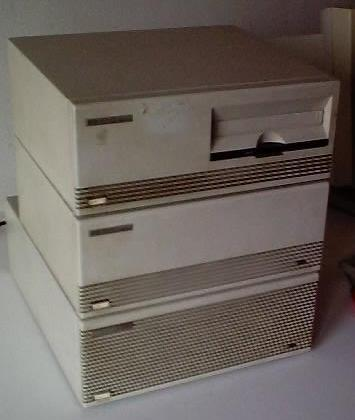
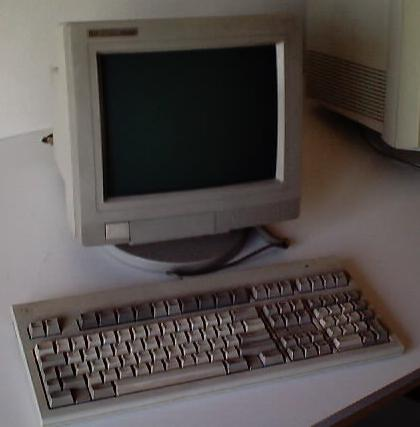

It was given to me by a friend. He didn't know what to do with it; he knew I was looking for old computers, and told me so.
The computer is all modular. It has the CPU, a Hard Disk and a Tape Drive.
The base is a shared bus which interconnects different boards. It delivers power to the different parts of the HP 260 and lets them share information.
The boards of the system determine the external devices the computer can control. The box where the boards reside only has the power source and the main bus, so these boards will be explained in more detail separately.
A high resolution scan of this board is available here.
This mainboard offers connection to two terminals; these are called the consoles. There is the first (and most important), and the second; I don't know why is this last intended for.
The board offers also a "DIAG" button. I've never tried it by now, or I cannot remember what is it for.
Curious: The computer has a 7-segment LED display over the board. Even it doesn't face at the rear of the computer, it can still be seen through the back of it. HP software developers test it in its "Hardware tests" soft, so it can be accessed by software as an output device.
A high resolution scan of this board is available here.
This board lets the computer interact with other HP-IB devices. The system I own has two of them: a hard drive and a tape drive. All the devices externally connected to the computer must use this interface to communicate with the HP260; HP has even built printers which use this interface.
More information about the HP-IB bus will be provided soon.
The main machine was developed to be a server. So, it must have its workstations, but doesn't have any network interface. Workstations are serial terminals, the usual more than ten years ago. Those workstations were connected to the system through this mainboard. A high resolution scan of it can be found here.
It offers 3 ports in the back of the board, and also a connector for adding 2 more ports. I own that cable, and I can attach terminals to all of the 5 serial lines. The serial ports can follow two standards of serial communication: RS-232 and RS-454.
The server can control more than one workstation at once; this one can have exactly five workstations, and two consoles. HP-260 also has support for modems (Bell 300 and 1200 bauds if I recall correctly), so any of the serial ports in this expansion board can be used for it.
As far as I know, there were two similar models: 7957 and 7958. The first is the small one, with 60Mb HD, and the second is 127Mb. I own the first, but it has a 100Mb capacity.
The module consists in a mainboard that controls the hard disk and the HP-IB bus, and the hard disk itself. The last one is a Micropolis 1353A. A high resolution scan of the mainboard can be found here.
Information about this hard drive can be found through the net. I'll only provide non-detailed information about it, and some specific data about the disk I own.
The disk drive seems to use a MFM bus, and have the same power supply as a normal PC HD. It is bigger than two 5 1/4" typical computer slots, and needs some warming time before accessing to it.
Micropolis media defect table:
ESDI 106 MB HDA # 734866 CA/B1/A5/D12 Hd Cyl BFIND Hd Cyl BFIND Hd Cyl BFIND Hd Cyl BFIND Hd Cyl BFIND 0 557 2541 . 0 635 20258 . 1 343 15118 . 1 344 15117 . 1 719 11802 . 1 792 2765 . 2 53 12080 . 2 395 17088 . 2 838 6127 . 2 925 5058 . 3 2 10078 . 3 3 10077 . 3 4 10077 . 4 71 19373 . 4 72 19373 .
I don't know too much about this module. I don't own any tape for it. The HP 260 system also supported floppy drives, but this one hadn't. So I suppose the operating system was installed through the tape drive; anyway, I don't have any copy of it.
I'd really like to know which kind of tapes this drive used, so I could make a backup of the data in the Hard Disk. Please mail me if anyone knows (bottom of the page).
The module is composed by the basic tape drive, and it's mainboard controller that interacts with the HP-IB bus. The basic tape drive is labeled 9144K.
Torsten Urban has told me some other information about these tape drives, as he has worked with them for more than 5 years. He says: "The HP 9144 and 9145 Tape Drives use an propietary Tape Format, which was(!) only provided by HP. The Tapes look like simple QIC Tape Drives with 150MB capacity e. g. DC6150 Tapes, but they need an special preformat by HP. These specially preformatted Tapes are the only Tapes you can use in an 9144 or 9145 Tape Drive :-( :-(
Users of an HP 3000 System have the same Problem with these Tape Drives."
There is nothing by now about the software used in the HP-260. It's hard to say many information about it as I don't know how to send data to a PC from the HP-260. I'll try something about serial lines someday.
The system makes a test when it is started. Then it waits for the hard disk being warmed up, and then the Operating System is loaded. It is based in BASIC, and it supports multi-processing. It supports more background processes than foreground.
The filesystem doesn't allow folders, and it follows 8.3 file naming. The
file listing is obtained using CAT (BASIC classic command), and
you can specify the drive as a parameter of the command. You can also use
patterns.

These are the terminals I was given with the system. I own three of them, but only two keyboards.
They were the best terminals I had until I acquired a VT420. HP 700/92 terminals allow 72Hz refresh (and easy switching also between 50 or 60Hz), and 38400 bauds communication. They use green phosphor, and have a very high resolution (allowing clear 132 columns mode).
Torsten Urban has told me more information about user interfaces with the HP 260: "The HP 260 supports also a thing called 'Video-Terminal'. In this case, there is a Graphics Controller and a Keyboard Controller installed into the 260 Main Machine or into the optional "Card Extender Box". Then you can connect such a Videoterminal to the System. The Terminals were several times faster in displaying information on the screen than serial terminals like the 700/92 or 700/96. The maximum cable length was about 25 meters!!"
Zbigniew Baniewski has told me how to unlock such 700/92 terminals, if they're locked at boot: There was just a need to hold key "D" while turning the power on - and that had removed the "lock".
All of the serial ports in the system are female; since PC represents x86 Intel architecture, serial ports in personal computers have used male connectors in devices. You might want to use one of those HP 700/92 terminals; then, you'll have to use a male-female null modem cable.
I'll try to provide more information about the software soon; I haven't started the system in few years, and I cannot remember detailed enough information about it.
I still own the manuals of the entire system, as also some programming user guides (some of them in spanish). I'll try to scan them, and put it in the site, but right now I am not able to do that (I need Adobe Capture or any other text scanner & and PDF writer.
Torsten Urban is looking for a HP 260 system. If anyone wants to sell a machine, please contact him.
Started 24/08/2001 / Updated 2003-03-03 11:06:56.000000000 +0100
[top] [home] [Software utilities]
Viric's Web Site / Webmaster: viric / Started 03/08/2001 / Updated mié sep 17 01:30:41 CEST 2003{kind=link}
{kind=link}
{kind=link}
{kind=link}
{kind=link}
{kind=link}
{kind=link}
{kind=link}